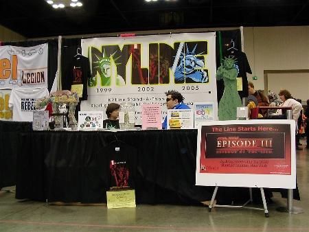

Y'know, this will probably (and hopefully) be the last time I enter the number zero for "People on line" for the next three weeks. Jiminy Wicket!
The preparation for the start of the line on Saturday has been intense, and this week has been, as we say in the trade, "cawazy". But before we make the jump to lightspeed, we wanted to share with you the unbelievable experience we had at Star Wars Celebration III this past weekend in Indianapolis. Because it took place just a week before the line started, most of us would never have dreamed of heading over to CIII (I certainly wouldn't have flown out hours after taking a test on Friday). In every conceivable aspect it turned out to be a success.
The booth itself was a spectacle, and we were able to spread the NYLine gospel far and wide, registering new members on site. Crowds were often...crowding (it's late, I'm tired), and the Sucklord's "Graffiti AT-AT" and "DJ Stormtrooper" were a huge hit, even making the StarWars.com picture gallery. The star of the show was our Lego Lady Liberty Jedi mascot, doing her thing as the guardian of peace and justice in our little galaxy. Only a dentist can say they've seen more jaws drop than I did over the weekend, especially by some extremely excited younglings.
LLL, as we like to call her, will go up for bids in our NYLine eBay auction for the Starlight Starbright Children's Foundation at 10 PM EST on April 30th, and last for 10 days. If the reaction is anything like what we got at Celebration, this thing could be fun. One person offered $1,000 for her on the spot. We will be patient...
Here's a picture of our booth from a quiet early morning - one of the only times we'd be able to get this shot, since most always it would be blocked by the throngs of people hanging around it.
In addition, as you may already have seen, Vince Hardy has taken and edited some scrumtralescent video of the convention. There is still more to come, and line members can look forward to some really cool footage that was taken on the last day. We have something special planned for you.
The area of sponsorship was also a boon. (Wow, I never thought I would use both the words "boon" and "throngs" in sentences). Fantastic contacts were made, which are resulting in great prizes for our line members. You'll start receiving these the moment that you check in, when you get your official NYLine gift bag.
And finally, and most importantly, we were able to raise $1,403 for the Starlight Starbright Children's Foundation, by selling buttons, badges, and t-shirts, and because of the generosity of Star Wars fans from around the world. You guys are the hyperdrive generator that make this thing go, and we can't thank you enough. The success of this endeavor is just the first step into a larger world, and we can't wait to start down that path with you all in just one more day.
Ziegfeld Theatre, here we come!